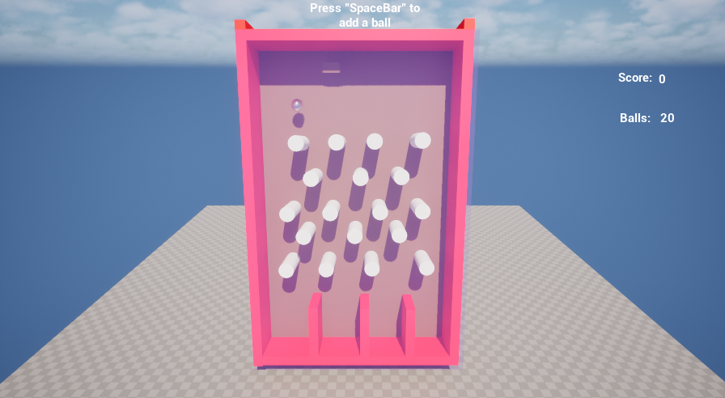
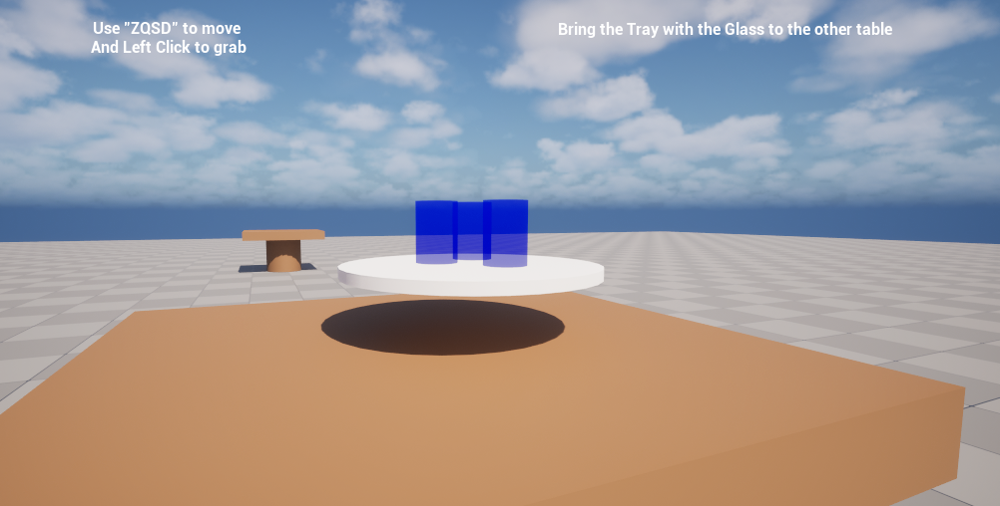
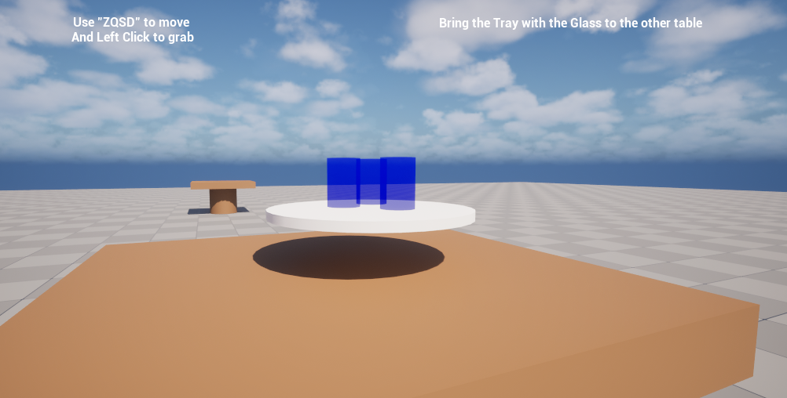
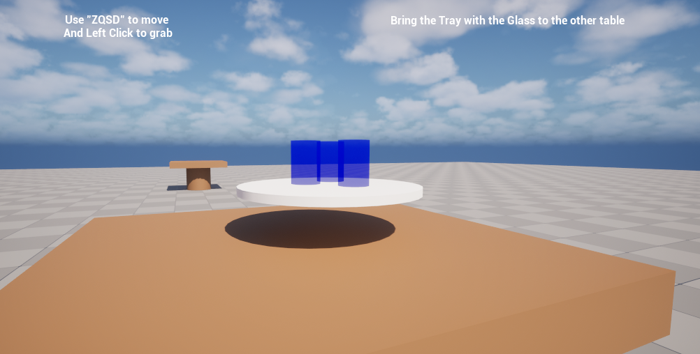
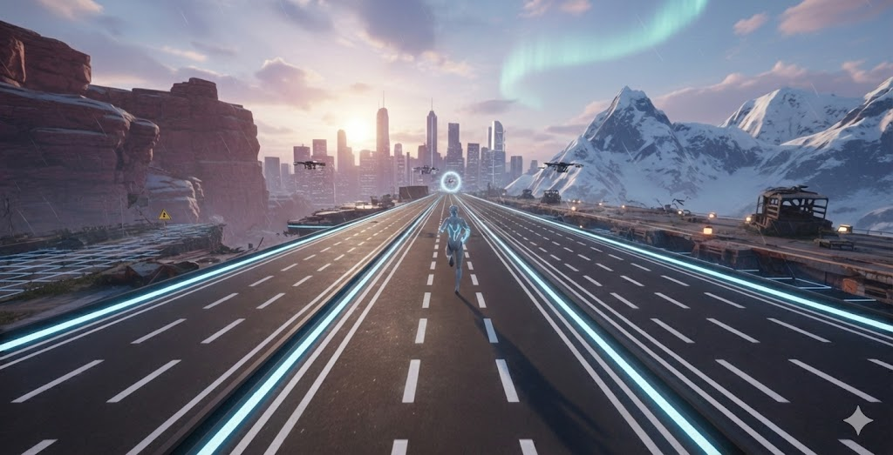
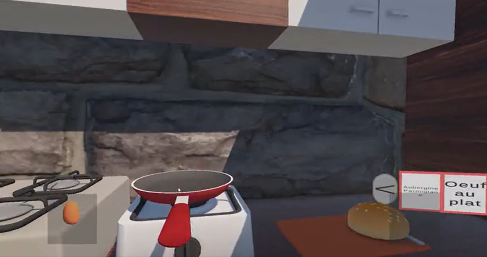
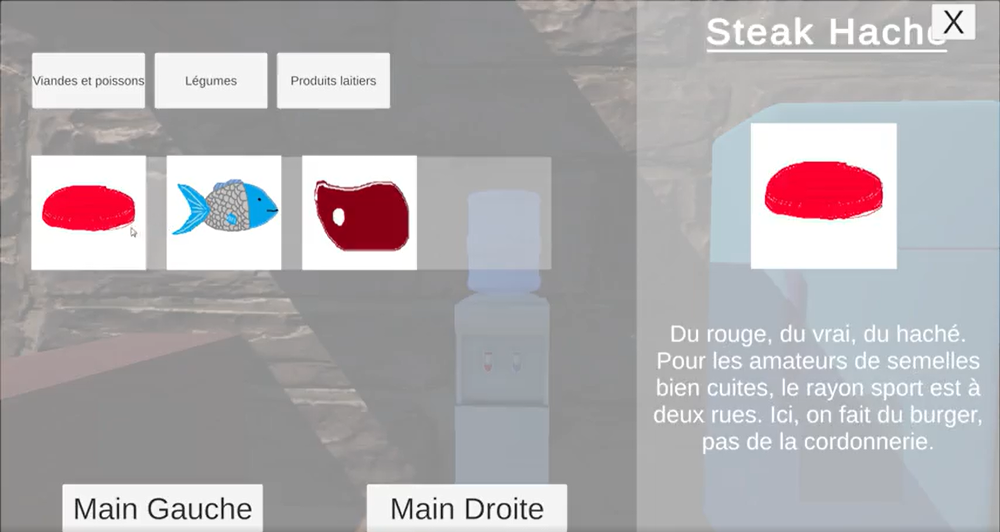
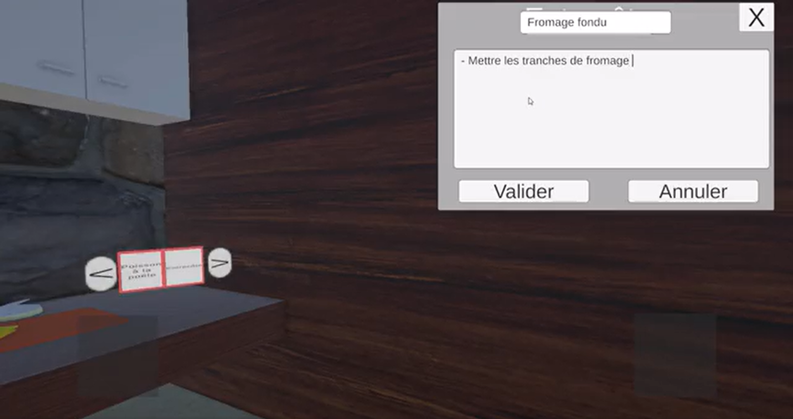
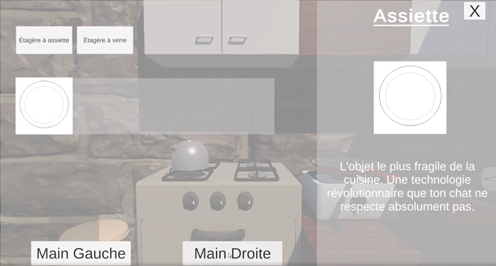

Mes Projets

 


Compilation Mini-Jeux
Une série de prototypes basée sur la physique avancée. 1 pachinko, 2 balle de démolition, 3 jeu du serveur





Cooking simulator UI-UX
Jeu de cuisine utilisant l'ui et l'ux pour grab des objets et aliments, ouvrir des placards, voir des recettes et en ajouter.